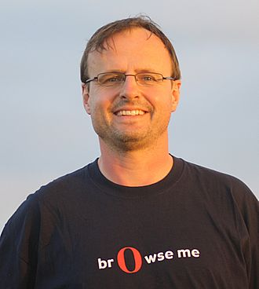

Professor Sir
Tim Berners-Lee
.jpg)
Berners-Lee in 2014
| Born | Timothy John Berners-Lee 8 June 1955 (age 64) London, England |
| Other names | TimBL TBL |
| Education Spouse(s) | Queen's College, Oxford (BA) Nancy Carlson (m. 1990; div. 2011) Rosemary Leith (m. 2014) |
| Awards | Mary Lee Woods Awards Turing Award (2016) Queen Elizabeth Prize (2013) Foreign Associate of the National Academy of Sciences (2009) Order of Merit (2007) ACM Software System Award (1995) |
| Institutions | CERN Massachusetts Institute of Technology World Wide Web Consortium University of Oxford University of Southampton |
| Website | Official website |
Tim Berners-Lee
Sir Timothy John Berners-Lee OM KBE FRS FREng FRSA FBCS (born 8 June 1955), also known as TimBL, is an English engineer and computer scientist best known as the inventor of the World Wide Web. He is a Professorial Fellow of Computer Science at the University of Oxford and a professor at the Massachusetts Institute of Technology (MIT). Berners-Lee proposed an information management system on 12 March 1989, then implemented the first successful communication between a Hypertext Transfer Protocol (HTTP) client and server via the internet in mid-November.
Tim Berners-Lee at the Home Office, London, on 11 March 2010
Berners-Lee is the director of the World Wide Web Consortium (W3C) which oversees the continued development of the Web. He is also the founder of the World Wide Web Foundation and is a senior researcher and holder of the 3Com founders chair at the MIT Computer Science and Artificial Intelligence Laboratory (CSAIL). He is a director of the Web Science Research Initiative (WSRI) and a member of the advisory board of the MIT Center for Collective Intelligence. In 2011, he was named as a member of the board of trustees of the Ford Foundation. He is a founder and president of the Open Data Institute and is currently an advisor at social network MeWe.
In 2004, Berners-Lee was knighted by Queen Elizabeth II for his pioneering work. In April 2009, he was elected a Foreign Associate of the National Academy of Sciences. He was named in Time magazine's list of the 100 Most Important People of the 20th century and has received a number of other accolades for his invention. He was honoured as the "Inventor of the World Wide Web" during the 2012 Summer Olympics opening ceremony in which he appeared working with a vintage NeXT Computer at the London Olympic Stadium. He tweeted "This is for everyone" which appeared in LCD lights attached to the chairs of the audience. He received the 2016 Turing Award "for inventing the World Wide Web, the first web browser, and the fundamental protocols and algorithms allowing the Web to scale".
Håkon Wium Lie
Håkon Wium Lie, March 2009
| Born | July 16, 1965 (age 54) Halden, Norway |
| Employer | Opera Software |
| Known for | Cascading Style Sheets |
| Website | Personal homepage of Håkon W. Lie |
Håkon Wium Lie
Håkon Wium Lie (born July 16, 1965) is a Norwegian web pioneer, a standards activist, and the Chief Technology Officer of Opera Software from 1998 until the browser was sold to new owners in 2016. He is best known for developing Cascading Style Sheets (CSS) while working with Tim Berners-Lee and Robert Cailliau at CERN in 1994.
Håkon Wium Lie attended Østfold University College, West Georgia College, and MIT Media Lab, receiving an MS in Visual Studies in 1991.
Education and career
On February 17, 2006, he successfully defended his PhD thesis at the University of Oslo. His PhD thesis is background to the origins of CSS and a rationale to some of the design decisions behind it – particularly as to why some features were not included and why CSS avoids trying to become DSSSL.[1][2]
He has worked for, among others, the W3C, INRIA, CERN, MIT Media Lab, and Norwegian telecom research in Televerket.
Brendan Eich

Brendan Eich, official Mozilla Foundation photograph, August 21, 2012
| Born | July 4, 1961 (age 58) Pittsburgh, Pennsylvania, U.S. |
| Alma mater | University of Illinois at Urbana-Champaign Santa Clara University |
| Known for | JavaScript, opposition to same-sex marriage |
| Website | brendaneich.com |
Brendan Eich
Brendan Eich (/ˈaɪk/; born July 4, 1961) is an American technologist and creator of the JavaScript programming language. He co-founded the Mozilla project, the Mozilla Foundation and the Mozilla Corporation, and served as the Mozilla Corporation's chief technical officer and briefly, as its chief executive officer. He is the CEO of Brave Software.
Håkon Wium Lie attended Østfold University College, West Georgia College, and MIT Media Lab, receiving an MS in Visual Studies in 1991.
Education and career
Brendan Eich grew up in Pittsburgh; Gaithersburg, Maryland; and Palo Alto, and he attended Ellwood P. Cubberley High School, graduating in the class of 1979. Eich received his bachelor's degree in mathematics and computer science at Santa Clara University. He received his master's degree in 1985 from the University of Illinois at Urbana-Champaign.
Eich started his career at Silicon Graphics, working for seven years on operating system and network code. He then worked for three years at MicroUnity Systems Engineering writing microkernel and DSP code, and doing the first MIPS R4000 port of GCC.
He started work at Netscape Communications Corporation in April 1995. Eich originally joined intending to put Scheme "in the browser", but his Netscape superiors insisted that the language’s syntax resemble that of Java. The result was a language that had much of the functionality of Scheme, the object orientation of Self, and the syntax of Java. The first version was completed in ten days in order to accommodate the Navigator 2.0 Beta release schedule, and was called Mocha, but renamed LiveScript in September 1995 and later JavaScript in December. Eich continued to oversee the development of SpiderMonkey, the specific implementation of JavaScript in Navigator.
In 1998, Eich helped found Mozilla.org, and in 2003, after aol decided to close its netscape division, Eich helped found the Mozilla foundation.
About me
| Name: | Zhou shu |
| Student ID: | 22552162 |
| Education: | UWA |
| Major: | Mathematics and Statistics;
Data scicence |
| Technical ability: | Linux, R, C/C++ (mpi, openMP), Python(Flask), matlab, SQL, HTML, CSS, JavaScript, LaTeX.
Basic understanding of Topology, Algebraic Structure, Statistics, Spatial Statistics, Random process, Numerical Analysis, Mathematical Modeling and Combinatorial mathematics. |